版本
ActiveMQ 5.11.3
JMS（JAVA Message Service,java消息服务）API是一个消息服务的标准或者说是规范，允许应用程序组件基于JavaEE平台创建、发送、接收和读取消息。它使分布式通信耦合度更低，消息服务更加可靠以及异步性。
JMS是java的消息服务，JMS的客户端之间可以通过JMS服务进行异步的消息传输。
消息模型：
Point-to-Point(P2P) 点对点 Publish/Subscribe(Pub/Sub) 发布订阅
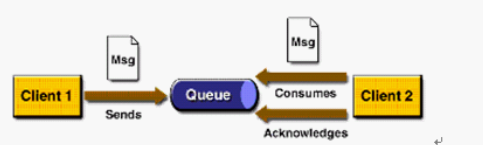
涉及角色
消息队列（Queue） 发送者(Sender) 接收者(Receiver) 每个消息都被发送到一个特定的队列，接收者从队列中获取消息。队列保留着消息，直到他们被消费或超时。
P2P的特点
每个消息只有一个消费者（Consumer）(即一旦被消费，消息就不再在消息队列中) 发送者和接收者之间在时间上没有依赖性，也就是说当发送者发送了消息之后，不管接收者有没有正在运行，它不会影响到消息被发送到队列 接收者在成功接收消息之后需向队列应答成功
如果希望发送的每个消息都应该被成功处理的话，那么你需要P2P模式
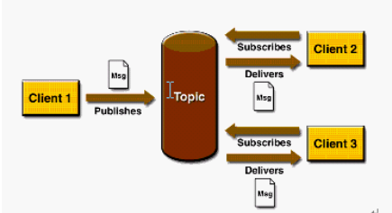
涉及角色
主题（Topic） 发布者（Publisher） 订阅者（Subscriber） 客户端将消息发送到主题。多个发布者将消息发送到Topic,系统将这些消息传递给多个订阅者
Pub/Sub的特点
每个消息可以有多个消费者 发布者和订阅者之间有时间上的依赖性。针对某个主题（Topic）的订阅者，它必须创建一个订阅者之后，才能消费发布者的消息，而且为了消费消息，订阅者必须保持运行的状态。 为了缓和这样严格的时间相关性，JMS允许订阅者创建一个可持久化的订阅。这样，即使订阅者没有被激活（运行），它也能接收到发布者的消息。
如果希望发送的消息可以不被做任何处理、或者被一个消息者处理、或者可以被多个消费者处理的话，那么可以采用Pub/Sub模型
在JMS中，消息的产生和消息是异步的。对于消费来说，JMS的消息者可以通过两种方式来消费消息。 同步 订阅者或接收者调用receive方法来接收消息，receive方法在能够接收到消息之前（或超时之前）将一直阻塞 异步 订阅者或接收者可以注册为一个消息监听器。当消息到达之后，系统自动调用监听器的onMessage方法
ConnectionFactory
创建Connection对象的工厂，针对两种不同的jms消息模型，分别有QueueConnectionFactory和TopicConnectionFactory两种。可以通过JNDI来查找ConnectionFactory对象。
Destination
Destination的意思是消息生产者的消息发送目标或者说消息消费者的消息来源。对于消息生产者来说，它的Destination是某个队列（Queue）或某个主题（Topic）;对于消息消费者来说，它的Destination也是某个队列或主题（即消息来源）。
Destination实际上就是两种类型的对象：Queue、Topic可以通过JNDI来查找Destination
Connection
Connection表示在客户端和JMS系统之间建立的链接（对TCP/IP socket的包装）。Connection可以产生一个或多个Session。跟ConnectionFactory一样，Connection也有两种类型：QueueConnection和TopicConnection。
Session
Session是我们操作消息的接口。可以通过session创建生产者、消费者、消息等。Session提供了事务的功能。当我们需要使用session发送/接收多个消息时，可以将这些发送/接收动作放到一个事务中。同样，也分QueueSession和TopicSession。
消息的生产者
消息生产者由Session创建，并用于将消息发送到Destination。同样，消息生产者分两种类型：QueueSender和TopicPublisher。可以调用消息生产者的方法（send或publish方法）发送消息。
消息消费者
消息消费者由Session创建，用于接收被发送到Destination的消息。两种类型：QueueReceiver和TopicSubscriber。可分别通过session的createReceiver(Queue)或createSubscriber(Topic)来创建。当然，也可以session的creatDurableSubscriber方法来创建持久化的订阅者。
MessageListener
消息监听器。如果注册了消息监听器，一旦消息到达，将自动调用监听器的onMessage方法。EJB中的MDB（Message-Driven Bean）就是一种MessageListener
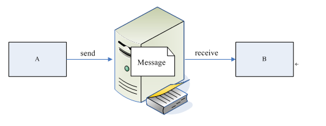
消息中间件（MOM：Message Orient middleware）
消息中间件有很多的用途和优点： 1. 将数据从一个应用程序传送到另一个应用程序，或者从软件的一个模块传送到另外一个模块； 2. 负责建立网络通信的通道，进行数据的可靠传送。 3. 保证数据不重发，不丢失 4. 能够实现跨平台操作，能够为不同操作系统上的软件集成技工数据传送服务
MQ英文名MessageQueue，中文名也就是大家用的消息队列，就是一个消息的接受和转发的容器，可用于消息推送。
ActiveMQ是由Apache出品的，一款最流行的，能力强劲的开源消息总线。ActiveMQ是一个完全支持JMS1.1和J2EE 1.4规范的 JMS Provider实现，它非常快速，支持多种语言的客户端和协议，而且可以非常容易的嵌入到企业的应用环境中，并有许多高级功能
1、多种语言和协议编写客户端。语言: Java, C, C++, C#, Ruby, Perl, Python, PHP。应用协议: OpenWire,Stomp REST,WS Notification,XMPP,AMQP 2、完全支持JMS1.1和J2EE 1.4规范 (持久化,XA消息,事务) 3、对Spring的支持,ActiveMQ可以很容易内嵌到使用Spring的系统里面去 4、通过了常见J2EE服务器(如 Geronimo,JBoss 4, GlassFish,WebLogic,Tomcat)的测试,其中通过JCA 1.5 resource adaptors的配置,可以让ActiveMQ可以自动的部署到任何兼容J2EE 1.4 商业服务器上 5、支持多种传送协议:in-VM,TCP,SSL,NIO,UDP,JGroups,JXTA 6、支持通过JDBC和journal提供高速的消息持久化 7、从设计上保证了高性能的集群,客户端-服务器,点对点 8、支持Ajax 9、支持与Axis的整合 10、可以很容易得调用内嵌JMS provider,进行测试
1、多个项目之间集成 (1) 跨平台 (2) 多语言 (3) 多项目 2、降低系统间模块的耦合度，解耦 (1) 软件扩展性 3、系统前后端隔离 ( 1) 前后端隔离，屏蔽高安全区
命令
cd /opt/work tar -zxvf apache-activemq-5.11.3-bin.tar.gz
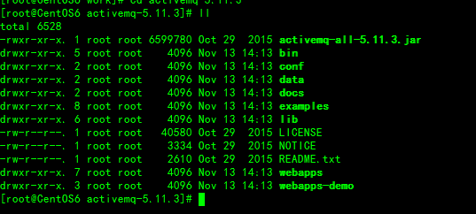
bin存放的是脚本文件 conf存放的是基本配置文件 data存放的是日志文件 docs存放的是说明文档 examples存放的是简单的实例 lib存放的是activemq所需jar包 webapps用于存放项目的目录
/opt/work/apache-activemq-5.11.3/bin/activemq start 启动 /opt/work/apache-activemq-5.11.3/bin/activemq stop 停止 在浏览器访问 http://10.211.55.12:8161/admin/ 账号和密码都是admin
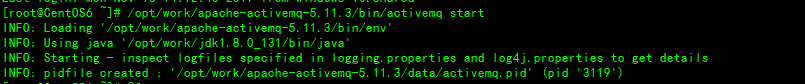
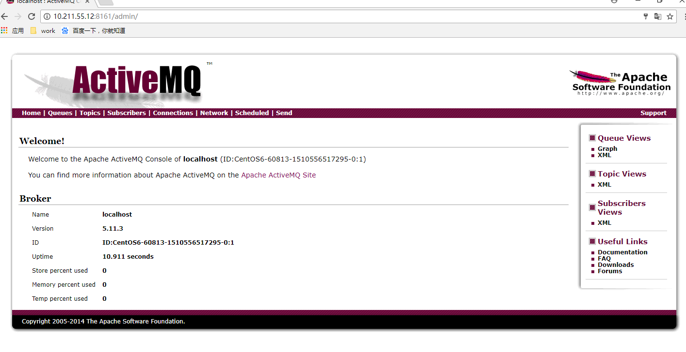
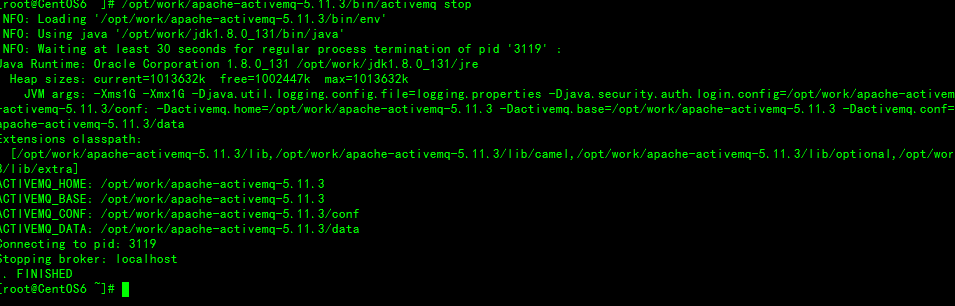
注意：如果主机名称包含下划线、小数点等特殊字符时。启动会失败
如果无法启动,查看 data 目录下的 activemq.log 文件查看日志,可能会是因为缺少 commons-dbcp 和 commons-pool 依赖包,我们需要复制依赖包到 lib 目录,注意 lib 下的optional目录有 dbcp2和 pool2依赖包,但是这两个不行,我们需要不带2的包
基于Maven+Idea进行代码编写
xxxxxxxxxx<project xmlns="http://maven.apache.org/POM/4.0.0" xmlns:xsi="http://www.w3.org/2001/XMLSchema-instance" xsi:schemaLocation="http://maven.apache.org/POM/4.0.0 http://maven.apache.org/maven-v4_0_0.xsd"> <modelVersion>4.0.0</modelVersion> <groupId>xph</groupId> <artifactId>My_ActiveMQ</artifactId> <packaging>war</packaging> <version>1.0</version> <!-- TODO project name --> <name>quickstart</name> <description></description> <dependencies> <!-- https://mvnrepository.com/artifact/org.apache.activemq/activemq-client --> <dependency> <groupId>org.apache.activemq</groupId> <artifactId>activemq-client</artifactId> <version>5.11.3</version> </dependency> </dependencies> <build> <plugins> <!-- java编译插件 --> <plugin> <groupId>org.apache.maven.plugins</groupId> <artifactId>maven-compiler-plugin</artifactId> <version>3.6.0</version> <configuration> <source>1.8</source> <target>1.8</target> <encoding>UTF-8</encoding> </configuration> </plugin> </plugins> </build></project>MQProducer 消息生产者
xxxxxxxxxxpublic class MQProducer { //默认连接用户名 private static final String USERNAME = ActiveMQConnection.DEFAULT_USER; //默认连接密码 private static final String PASSWORD = ActiveMQConnection.DEFAULT_PASSWORD; //默认连接地址 private static final String BROKEURL = "tcp://10.211.55.12:61616"; //发送的消息数量 private static final int SENDNUM = 10; //发送消息 public static void sendMsg(){ //连接工厂 ConnectionFactory connectionFactory; //连接 Connection connection = null; //会话 接受或者发送消息的线程 Session session; //消息的目的地 Destination destination; //消息生产者 MessageProducer messageProducer; //实例化连接工厂 connectionFactory = new ActiveMQConnectionFactory(USERNAME, PASSWORD, BROKEURL); try { //通过连接工厂获取连接 connection = connectionFactory.createConnection(); //启动连接 connection.start(); //创建session，用于接收消息，参数配置1：是否启用事务，蚕食配置2：签收模式，一般我们设置为自动签收 session = connection.createSession(true, Session.AUTO_ACKNOWLEDGE); //创建一个名称为HelloWorld的消息队列 destination = session.createQueue("HelloWorld"); //创建消息生产者 messageProducer = session.createProducer(destination); //发送消息 for (int i = 0; i < SENDNUM; i++) { //创建一条文本消息 TextMessage message = session.createTextMessage("ActiveMQ 发送消息" +i); System.out.println("发送消息：Activemq 发送消息" + i); //通过消息生产者发出消息 messageProducer.send(message); } session.commit(); } catch (Exception e) { e.printStackTrace(); }finally{ if(connection != null){ try { connection.close(); } catch (JMSException e) { e.printStackTrace(); } } } }}send(Destination destination,Message message,int deliveryMode,int priority,long timeToLive); 参数说明： 1、destination：通过session创建Destination对象，指的是一个客户端用来指定生产的消息目标或消息来源的对象。在PTP模式中，Destination被称作Queue队列，在Pub/Sub模式中Destination被称作topic主题。在程序中可以使用多个Queue或topic 2、message：消息 3、deliveryMode:传送模式，PERSISTENT（默认）和NON_PERSISTENT，如果容忍消息丢失，可以使用NON_PERSISTENT。 4、priority：消息优先级，从0-9十个级别，0-4是普通消息，5-9是加急消息，默认是4。 5、timeToLive：消息过期时间，默认情况下消息永不过期。
Producer_Main 主函数 启动生产者发布消息
xxxxxxxxxxpublic class Producer_Main { public static void main(String[] args) { //启动生产者进行消息的发送 MQProducer.sendMsg(); }}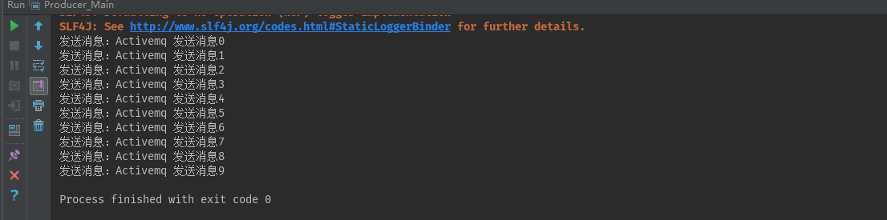
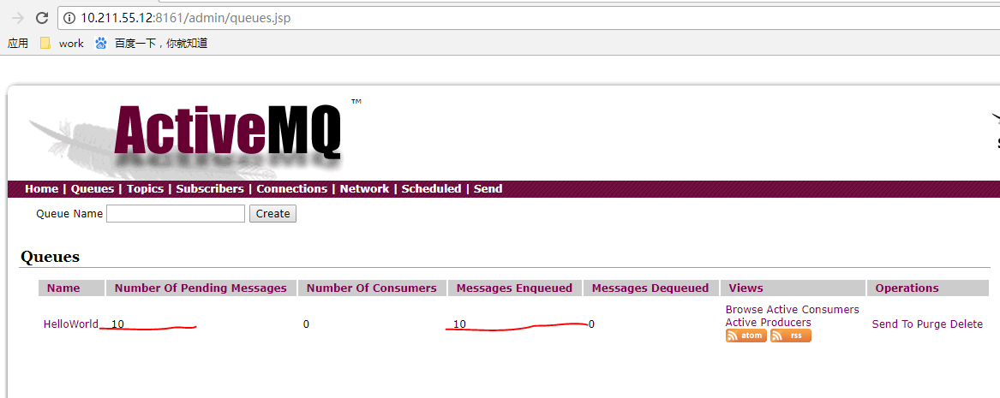
MQConsumer 消息消费者
xxxxxxxxxxpublic class MQConsumer { private static final String USERNAME = ActiveMQConnection.DEFAULT_USER;//默认连接用户名 private static final String PASSWORD = ActiveMQConnection.DEFAULT_PASSWORD;//默认连接密码 private static final String BROKEURL = "tcp://10.211.55.12:61616";//默认连接地址 //接受消息 public static void receiveMsg() { ConnectionFactory connectionFactory;//连接工厂 Connection connection = null;//连接 Session session;//会话 接受或者发送消息的线程 Destination destination;//消息的目的地 MessageConsumer messageConsumer;//消息的消费者 //实例化连接工厂 connectionFactory = new ActiveMQConnectionFactory(MQConsumer.USERNAME, MQConsumer.PASSWORD, MQConsumer.BROKEURL); try { //通过连接工厂获取连接 connection = connectionFactory.createConnection(); //启动连接 connection.start(); //创建session session = connection.createSession(false, Session.AUTO_ACKNOWLEDGE); //创建一个连接HelloWorld的消息队列 destination = session.createQueue("HelloWorld"); //创建消息消费者 messageConsumer = session.createConsumer(destination); while (true) { TextMessage textMessage = (TextMessage) messageConsumer.receive(100000); if(textMessage != null){ System.out.println("收到的消息:" + textMessage.getText()); }else { break; } } } catch (JMSException e) { e.printStackTrace(); } }}Consumer_Main 主函数 启动消费消息
xxxxxxxxxxpublic class Consumer_Main { public static void main(String[] args) { //启动消费者进行消息的读取 MQConsumer.receiveMsg(); }}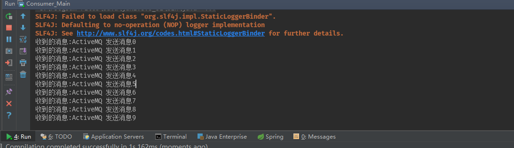
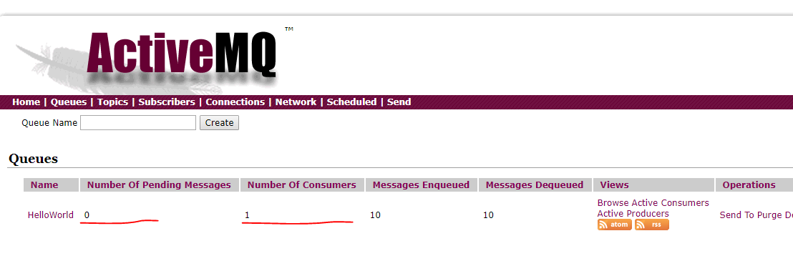
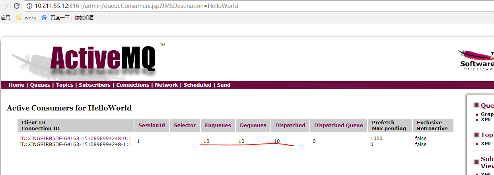
消息的同步接收是指：客户端主动去接收消息，客户端课采用MessageConsume的receive方法去接收下一个消息。
消息的异步接收是指：当消息到达MQ服务器时，MQ服务器主动通知客户端，客户点通过注册一个实现MessageListener接口的对象到MessageConsumer。MessageListener只有一个必须实现的方法：onMessage,它只接受一个参数Message。在为每个发送到Destination的消息实现onMessage时，调用该方法。
MessageConsumer是一个由Session创建的对象，用来从Destination接收消息。 其中messageSelector为消息选择器，noLocal标志默认为false，设置为true时，限制消费者只能接受和自己相同连接（connection）所发布的消息，此标志只适用于topic主题模式，不适用于queue队列模式；name标识订阅topic主题所对应的订阅名称，持久订阅时需要设置此参数
选择器检查了传入消息的“JMS_TYPE”属性，并确定了这个属性的值是否等于某个值。如果相等，则消息被消费，如果不相等，那么消息会被忽略。
消息生产者
MsgFilterSender 消息生产者
xxxxxxxxxxpublic class MsgFilterSender { private ConnectionFactory connectionFactory; private Connection connection; private Session session; private MessageProducer messageProducer; public MsgFilterSender() { try{ this.connectionFactory = new ActiveMQConnectionFactory("admin", "admin", "tcp://10.211.55.12:61616"); this.connection = this.connectionFactory.createConnection(); this.connection.start(); this.session = this.connection.createSession(Boolean.FALSE,Session.AUTO_ACKNOWLEDGE); this.messageProducer=this.session.createProducer(null); }catch (JMSException e){ e.printStackTrace(); } } //发送消息 public void send() { try{ //消息队列 Destination destination = this.session.createQueue("first"); //创建消息 MapMessage msg1 = this.session.createMapMessage(); msg1.setString("name","Jack"); msg1.setString("address","Bei Jing"); msg1.setIntProperty("age",23); msg1.setStringProperty("sex","m"); MapMessage msg2 = this.session.createMapMessage(); msg2.setString("name","rose"); msg2.setString("address","Nan Jing"); msg2.setIntProperty("age",22); msg2.setStringProperty("sex","f"); MapMessage msg3 = this.session.createMapMessage(); msg3.setString("name","Tom"); msg3.setString("address","Tian Jin"); msg3.setIntProperty("age",23); msg3.setStringProperty("sex","m"); MapMessage msg4 = this.session.createMapMessage(); msg4.setString("name","Lily"); msg4.setString("address","Qing dao"); msg4.setIntProperty("age",21); msg4.setStringProperty("sex","f"); //发送消息 this.messageProducer.send(destination,msg1,DeliveryMode.NON_PERSISTENT,1,1000*60*60); this.messageProducer.send(destination,msg2,DeliveryMode.NON_PERSISTENT,3,1000*60*60); this.messageProducer.send(destination,msg3,DeliveryMode.NON_PERSISTENT,5,1000*60*60); this.messageProducer.send(destination,msg4,DeliveryMode.NON_PERSISTENT,7,1000*60*60); //断开连接 this.connection.close(); }catch (JMSException e){ e.printStackTrace(); } }}Producer_Main 启动生产者发送消息
xxxxxxxxxxpublic class Producer_Main { public static void main(String[] args) { //启动生产者进行消息的发送 //MQProducer.sendMsg(); MsgFilterSender sender=new MsgFilterSender(); sender.send(); }}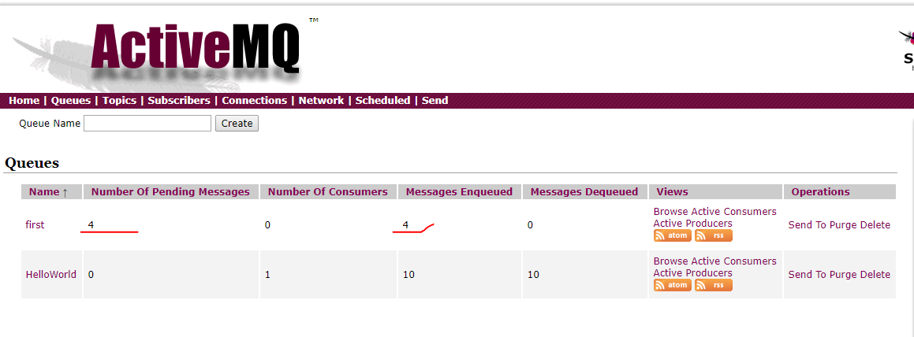
消息监听者
Listener 监听消息
xxxxxxxxxxpublic class Listener implements MessageListener { public void onMessage(Message message) { try { if(message instanceof MapMessage){ MapMessage msg = (MapMessage) message; System.out.println(msg.toString()); System.out.println(msg.getString("name")); System.out.println(msg.getString("address")); System.out.println(msg.getIntProperty("age")); System.out.println(msg.getStringProperty("sex")); }else{ System.out.println("消息源类型错误!"); } } catch (JMSException e) { e.printStackTrace(); } }}消息消费者
MsgFilterConsumer 消息消费者
xxxxxxxxxxpublic class MsgFilterConsumer { //使用selector的属性,必须是由setXXXProperty()方法定义的属性. public final String SELECTOR_1 = "name LIKE 'T%'";//无效 public final String SELECTOR_2 = "age >= 22"; public final String SELECTOR_3 = "sex='f'"; private ConnectionFactory connectionFactory; private Connection connection; private Session session; private Destination destination; private MessageConsumer messageConsumer; public MsgFilterConsumer() { try{ this.connectionFactory = new ActiveMQConnectionFactory("admin", "admin", "tcp://10.211.55.12:61616"); this.connection = this.connectionFactory.createConnection(); this.connection.start(); this.session = this.connection.createSession(Boolean.FALSE,Session.AUTO_ACKNOWLEDGE); //定义destination this.destination=this.session.createQueue("first"); //创建消费者的时候发生了变化 this.messageConsumer=this.session.createConsumer(this.destination,SELECTOR_2); }catch (JMSException e){ e.printStackTrace(); } } public void receiver(){ try{ this.messageConsumer.setMessageListener(new Listener()); }catch (JMSException e){ e.printStackTrace(); } }}Consumer_Main 启动消息消费
xxxxxxxxxxpublic class Consumer_Main { public static void main(String[] args) { //启动消费者进行消息的读取 //MQConsumer.receiveMsg(); MsgFilterConsumer consumer=new MsgFilterConsumer(); consumer.receiver(); }}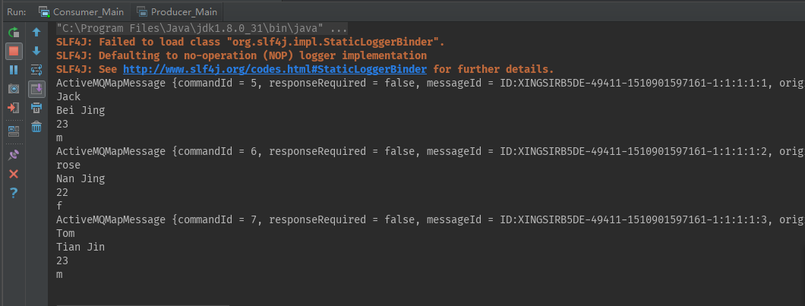
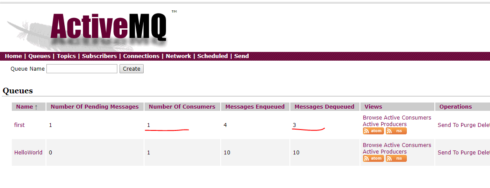
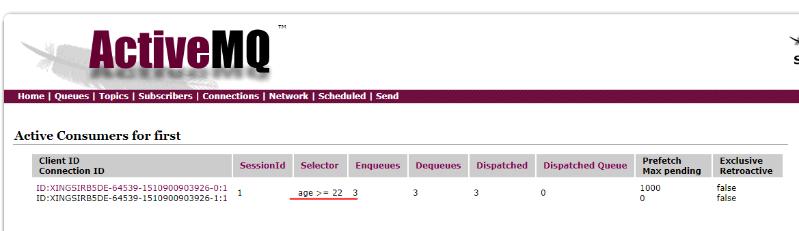
发布订阅模式有点类似于我们日常生活中订阅报纸。每年到年尾的时候，邮局就会发一本报纸集合让我们来选择订阅哪一个，在这个表里头列了所有出版发行的报纸，那么对于我们每一个订阅者来说，我们可以选择一份或者多份报纸。比如北京日报、潇湘晨报等。那么这些个我们订阅的报纸就相当于发布订阅模式里的topic。有很多个人订阅报纸，也有人可能订阅了和我相同的报纸。那么在这里相当于我们在同一个topic里面注册了。对于一份报纸发行来说，它和所有的订阅者就构成了一个1对多的关系，这种关系如下所示：
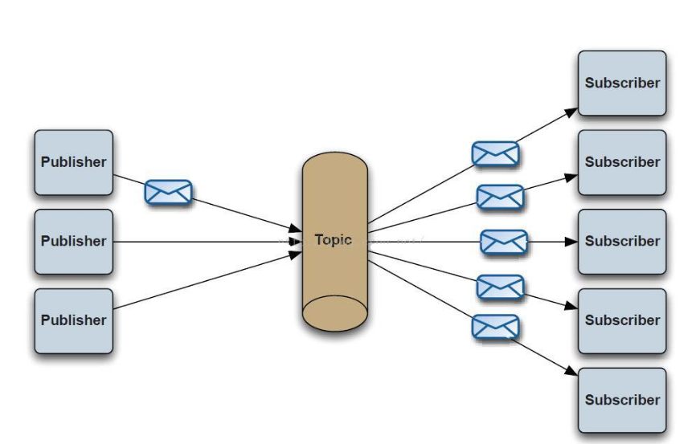
PubSender 消息生产者
xxxxxxxxxxpublic class PubSender { private ConnectionFactory connectionFactory; private Connection connection; private Session session; private MessageProducer messageProducer; public PubSender() { try{ this.connectionFactory = new ActiveMQConnectionFactory("admin", "admin", "tcp://10.211.55.12:61616"); this.connection = this.connectionFactory.createConnection(); this.connection.start(); this.session = this.connection.createSession(Boolean.FALSE,Session.AUTO_ACKNOWLEDGE); this.messageProducer=this.session.createProducer(null); }catch (JMSException e){ e.printStackTrace(); } } public void sendMessage() { try{ Destination destination = this.session.createTopic("topic"); TextMessage msg1 = this.session.createTextMessage("消息1"); TextMessage msg2 = this.session.createTextMessage("消息2"); TextMessage msg3 = this.session.createTextMessage("消息3"); this.messageProducer.send(destination,msg1); this.messageProducer.send(destination,msg2); this.messageProducer.send(destination,msg3); this.connection.close(); }catch (JMSException e){ e.printStackTrace(); } }}Producer_Main
xxxxxxxxxxpublic class Producer_Main { public static void main(String[] args) { //启动生产者进行消息的发送 //基本使用 //MQProducer.sendMsg(); //消息过滤// MsgFilterSender sender=new MsgFilterSender();// sender.send(); //发布与订阅pub/sub PubSender sender=new PubSender(); sender.sendMessage(); }}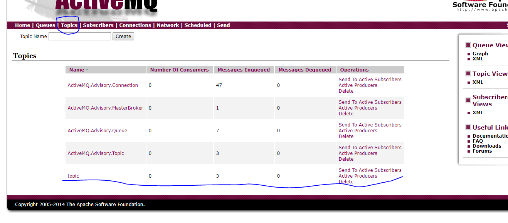
SubListener 消息监听器
xxxxxxxxxxpublic class SubListener implements MessageListener { public void onMessage(Message message) { try { if(message instanceof TextMessage){ TextMessage msg = (TextMessage) message; System.out.println(msg.toString()); System.out.println(msg.getText()); }else{ System.out.println("消息源类型错误!"); } } catch (JMSException e) { e.printStackTrace(); } }}SubConsumer 消息消费
xxxxxxxxxxpublic class SubConsumer { private ConnectionFactory connectionFactory; private Connection connection; private Session session; private Destination destination; private MessageConsumer messageConsumer; public SubConsumer() { try{ this.connectionFactory = new ActiveMQConnectionFactory("admin", "admin", "tcp://10.211.55.12:61616"); this.connection = this.connectionFactory.createConnection(); this.connection.start(); this.session = this.connection.createSession(Boolean.FALSE,Session.AUTO_ACKNOWLEDGE); //定义destination this.destination=this.session.createTopic("topic"); //创建消费者的时候发生了变化 this.messageConsumer=this.session.createConsumer(this.destination); }catch (JMSException e){ e.printStackTrace(); } } public void receiver(){ try{ this.messageConsumer.setMessageListener(new SubListener()); }catch (JMSException e){ e.printStackTrace(); } }}Consumer_Main 启动
xxxxxxxxxxpublic class Consumer_Main { public static void main(String[] args) { //启动消费者进行消息的读取 //基本使用 //MQConsumer.receiveMsg(); //消息过滤// MsgFilterConsumer consumer=new MsgFilterConsumer();// consumer.receiver(); //发布与订阅 SubConsumer consumer=new SubConsumer(); consumer.receiver(); }}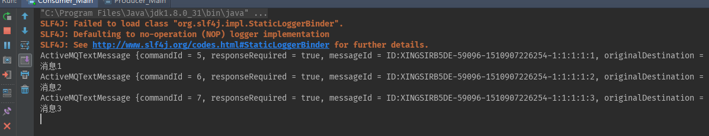 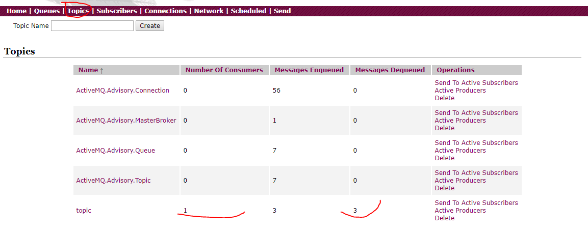
ActiveMQ消息持久化到Mysql
ActiveMQ提供多种数据持久化方式：可以持久化到文件，也可以持久化到数据库，其中数据库可以支持MySQL、Oracle等。
首先需要把MySql的驱动放到ActiveMQ的Lib目录下 如果前面没有添加 dbcp 和 pool, 现在无法启动,参考上面安装时候的错误方式,查看日志,可能是缺少依赖包
xxxxxxxxxxvim /opt/work/apache-activemq-5.11.3/conf/activemq.xml 编辑配置文件需要将其中的这段配置：<persistenceAdapter> <kahaDB directory="${activemq.base}/data/kahadb"/></persistenceAdapter>修改为：<persistenceAdapter> <jdbcPersistenceAdapter dataSource="#derby-ds" useDatabaseLock="false"/></persistenceAdapter>还需要在broker节点结束的后面定义id为derby-ds的bean,bean 节点是在根节点内部的<bean id="derby-ds" class="org.apache.commons.dbcp.BasicDataSource" destroy-method="close"> <property name="driverClassName" value="com.mysql.jdbc.Driver"/> <property name="url" value="jdbc:mysql://localhost:3306/db_case?relaxAutoCommit=true"/> <property name="username" value="root"/> <property name="password" value="lx"/> <property name="maxActive" value="200"/> <property name="poolPreparedStatements" value="true"/></bean> 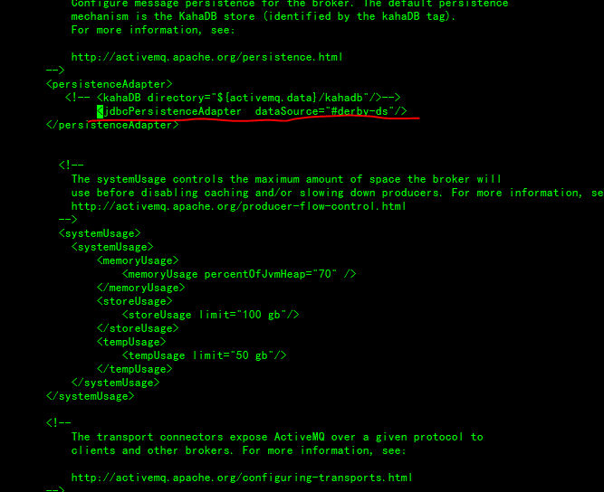
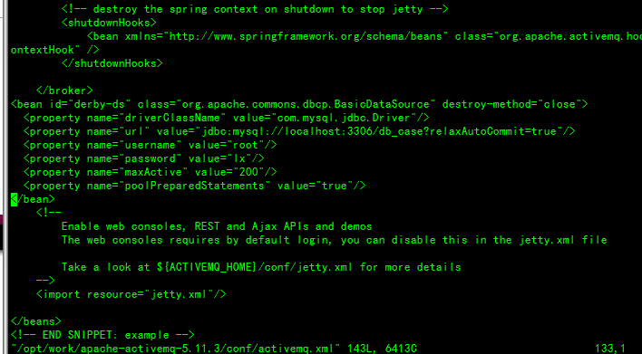
重新启动MQ，就会发现db_case库中多了三张表：activemq_acks，activemq_lock，activemq_msgs，OK,说明已经持久化成功了
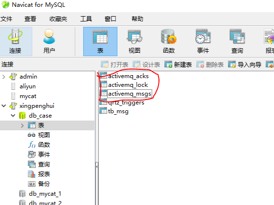
准备三个queckstart工程：mq-parent，mq-producer，mq-consumer
根项目，打包方式为pom
pom.xml
xxxxxxxxxx <project xmlns="http://maven.apache.org/POM/4.0.0" xmlns:xsi="http://www.w3.org/2001/XMLSchema-instance" xsi:schemaLocation="http://maven.apache.org/POM/4.0.0 http://maven.apache.org/xsd/maven-4.0.0.xsd"> <modelVersion>4.0.0</modelVersion> <groupId>xph</groupId> <artifactId>mq-parent</artifactId> <version>1.0-SNAPSHOT</version> <packaging>pom</packaging> <properties> <springframework.version>4.3.11.RELEASE</springframework.version> <activemq.version>5.11.3</activemq.version> </properties> <dependencies> <dependency> <groupId>org.springframework</groupId> <artifactId>spring-web</artifactId> <version>${springframework.version}</version> </dependency> <dependency> <groupId>log4j</groupId> <artifactId>log4j</artifactId> <version>1.2.17</version> </dependency> <dependency> <groupId>org.apache.activemq</groupId> <artifactId>activemq-client</artifactId> <version>${activemq.version}</version> </dependency> <dependency> <groupId>javax.mail</groupId> <artifactId>mail</artifactId> <version>1.4.7</version> </dependency> </dependencies></project>log4j.xml 日志配置文件
xxxxxxxxxxlog4j.rootLogger=INFO,A1,DRFlog4j.appender.A1=org.apache.log4j.ConsoleAppenderlog4j.appender.A1.layout=org.apache.log4j.PatternLayout# log4j.appender.A1.layout.ConversionPattern=%d %5p [%t] (%F:%L) - %m%nlog4j.appender.A1.layout.ConversionPattern=%d %5p [%F:%L] : %m%nlog4j.appender.DRF=org.apache.log4j.DailyRollingFileAppenderlog4j.appender.DRF.Threshold=INFOlog4j.appender.DRF.DatePattern='.'yyyy-MM-ddlog4j.appender.DRF.File=logs/edu-demo-mqproducer.loglog4j.appender.DRF.Append=truelog4j.appender.DRF.layout=org.apache.log4j.PatternLayoutlog4j.appender.DRF.layout.ConversionPattern=[%-5p][%d{yyyyMMdd HH:mm:ss,SSS}][%C{1}:%L] %m%nmq属性文件 mq.properties
xxxxxxxxxx## MQmq.brokerURL=tcp\://10.211.55.12\:61616mq.userName=adminmq.password=adminmq.pool.maxConnections=10#queueNamequeueName=chen.edu.mqtest.mailspring核心配置 sping.xml
xxxxxxxxxx <beans xmlns="http://www.springframework.org/schema/beans" xmlns:xsi="http://www.w3.org/2001/XMLSchema-instance" xmlns:p="http://www.springframework.org/schema/p" xmlns:context="http://www.springframework.org/schema/context" xmlns:aop="http://www.springframework.org/schema/aop" xmlns:tx="http://www.springframework.org/schema/tx" xsi:schemaLocation="http://www.springframework.org/schema/beans http://www.springframework.org/schema/beans/spring-beans.xsd http://www.springframework.org/schema/aop http://www.springframework.org/schema/aop/spring-aop.xsd http://www.springframework.org/schema/tx http://www.springframework.org/schema/tx/spring-tx.xsd http://www.springframework.org/schema/context http://www.springframework.org/schema/context/spring-context.xsd" default-autowire="byName" default-lazy-init="false"> <!-- 采用注释的方式配置bean --> <context:annotation-config /> <!-- 配置要扫描的包 --> <context:component-scan base-package="com.qfedu.mqtest" /> <!-- 读入配置属性文件 --> <context:property-placeholder location="classpath:mq.properties" /> <import resource="spring-mq.xml" /></beans>spring整合activemq配置 spring-mq.xml
xxxxxxxxxx <beans xmlns="http://www.springframework.org/schema/beans" xmlns:xsi="http://www.w3.org/2001/XMLSchema-instance" xmlns:p="http://www.springframework.org/schema/p" xmlns:context="http://www.springframework.org/schema/context" xmlns:aop="http://www.springframework.org/schema/aop" xmlns:tx="http://www.springframework.org/schema/tx" xsi:schemaLocation="http://www.springframework.org/schema/beans http://www.springframework.org/schema/beans/spring-beans-3.2.xsd http://www.springframework.org/schema/aop http://www.springframework.org/schema/aop/spring-aop-3.2.xsd http://www.springframework.org/schema/tx http://www.springframework.org/schema/tx/spring-tx-3.2.xsd http://www.springframework.org/schema/context http://www.springframework.org/schema/context/spring-context-3.2.xsd" default-autowire="byName" default-lazy-init="false"> <!-- 真正可以产生Connection的ConnectionFactory，由对应的 JMS服务厂商提供 --> <bean id="targetConnectionFactory" class="org.apache.activemq.ActiveMQConnectionFactory"> <!-- ActiveMQ服务地址 --> <property name="brokerURL" value="${mq.brokerURL}" /> <property name="userName" value="${mq.userName}"></property> <property name="password" value="${mq.password}"></property> </bean> <!-- ActiveMQ为我们提供了一个PooledConnectionFactory，通过往里面注入一个ActiveMQConnectionFactory 可以用来将Connection、Session和MessageProducer池化，这样可以大大的减少我们的资源消耗。 要依赖于 activemq-pool包 --> <bean id="pooledConnectionFactory" class="org.apache.activemq.pool.PooledConnectionFactory"> <property name="connectionFactory" ref="targetConnectionFactory" /> <property name="maxConnections" value="${mq.pool.maxConnections}" /> </bean> <!-- Spring用于管理真正的ConnectionFactory的ConnectionFactory --> <bean id="connectionFactory" class="org.springframework.jms.connection.SingleConnectionFactory"> <!-- 目标ConnectionFactory对应真实的可以产生JMS Connection的ConnectionFactory --> <property name="targetConnectionFactory" ref="pooledConnectionFactory" /> </bean> <!-- Spring提供的JMS工具类，它可以进行消息发送、接收等 --> <!-- 队列模板 --> <bean id="activeMqJmsTemplate" class="org.springframework.jms.core.JmsTemplate"> <!-- 这个connectionFactory对应的是我们定义的Spring提供的那个ConnectionFactory对象 --> <property name="connectionFactory" ref="connectionFactory"/> <property name="defaultDestinationName" value="${queueName}"></property> </bean> </beans>MailParam.java 邮件消息模板类
xxxxxxxxxxpublic class MailParam { /** 发件人 **/ private String from; /** 收件人 **/ private String to; /** 主题 **/ private String subject; /** 邮件内容 **/ private String content; public MailParam() { } public MailParam(String to, String subject, String content) { this.to = to; this.subject = subject; this.content = content; } public String getFrom() { return from; } public void setFrom(String from) { this.from = from; } public String getTo() { return to; } public void setTo(String to) { this.to = to; } public String getSubject() { return subject; } public void setSubject(String subject) { this.subject = subject; } public String getContent() { return content; } public void setContent(String content) { this.content = content; }}MQProducer.java 邮件消息生产者
xxxxxxxxxx("mqProducer")public class MQProducer { private JmsTemplate activeMqJmsTemplate; /** * 发送消息. * @param mailparam */ public void sendMessage(final MailParam mailparam) { activeMqJmsTemplate.send(new MessageCreator() { public Message createMessage(Session session) throws JMSException { return session.createTextMessage(JSONObject.toJSONString(mailparam)); } }); }}MQProducerTest.java 邮件消息生产测试类
xxxxxxxxxxpublic class MQProducerTest { private static final Log log = LogFactory.getLog(MQProducerTest.class); public static void main(String[] args) { try { ClassPathXmlApplicationContext context = new ClassPathXmlApplicationContext("classpath:spring-context.xml"); context.start(); MQProducer mqProducer = (MQProducer) context.getBean("mqProducer"); // 邮件发送 MailParam mail = new MailParam(); mail.setTo("chensizheng@163.com"); mail.setSubject("ActiveMQ消息邮件测试"); mail.setContent("这是内容balbala！"); mqProducer.sendMessage(mail); context.stop(); } catch (Exception e) { log.error("==>MQ context start error:", e); System.exit(0); } finally { log.info("===>System.exit"); System.exit(0); } }}运行MQProducerTest，观察MQ服务器
log4j.xml
xxxxxxxxxxlog4j.rootLogger=INFO,A1,DRFlog4j.appender.A1=org.apache.log4j.ConsoleAppenderlog4j.appender.A1.layout=org.apache.log4j.PatternLayout# log4j.appender.A1.layout.ConversionPattern=%d %5p [%t] (%F:%L) - %m%nlog4j.appender.A1.layout.ConversionPattern=%d %5p [%F:%L] : %m%nlog4j.appender.DRF=org.apache.log4j.DailyRollingFileAppenderlog4j.appender.DRF.Threshold=INFOlog4j.appender.DRF.DatePattern='.'yyyy-MM-ddlog4j.appender.DRF.File=logs/edu-demo-mqproducer.loglog4j.appender.DRF.Append=truelog4j.appender.DRF.layout=org.apache.log4j.PatternLayoutlog4j.appender.DRF.layout.ConversionPattern=[%-5p][%d{yyyyMMdd HH:mm:ss,SSS}][%C{1}:%L] %m%nmq属性文件 mq.properties
xxxxxxxxxx## MQmq.brokerURL=tcp\://10.211.55.12\:61616mq.userName=adminmq.password=adminmq.pool.maxConnections=10#queueNamequeueName=chen.edu.mqtest.mailmail.properties
xxxxxxxxxx#配置邮件发送者的信息#SMTP服务配置 设置一个开启STMP服务的发件箱mail.host=smtp.126.commail.port=25mail.username=你的邮箱地址mail.password=你的邮箱密码mail.smtp.auth=truemail.smtp.timeout=30000mail.default.from=你的邮箱地址spring.xml
xxxxxxxxxx <beans xmlns="http://www.springframework.org/schema/beans" xmlns:xsi="http://www.w3.org/2001/XMLSchema-instance" xmlns:p="http://www.springframework.org/schema/p" xmlns:context="http://www.springframework.org/schema/context" xmlns:aop="http://www.springframework.org/schema/aop" xmlns:tx="http://www.springframework.org/schema/tx" xsi:schemaLocation="http://www.springframework.org/schema/beans http://www.springframework.org/schema/beans/spring-beans.xsd http://www.springframework.org/schema/aop http://www.springframework.org/schema/aop/spring-aop.xsd http://www.springframework.org/schema/tx http://www.springframework.org/schema/tx/spring-tx.xsd http://www.springframework.org/schema/context http://www.springframework.org/schema/context/spring-context.xsd" default-autowire="byName" default-lazy-init="false"> <!-- 采用注释的方式配置bean --> <context:annotation-config /> <!-- 配置要扫描的包 --> <context:component-scan base-package="com.qfedu.mqtest" /> <!-- 读入配置属性文件 --> <context:property-placeholder location="classpath:mq.properties,classpath:mail.properties" /> <!-- proxy-target-class默认"false",更改为"ture"使用CGLib动态代理 --> <aop:aspectj-autoproxy proxy-target-class="true" /> <import resource="spring-mq.xml" /> <import resource="spring-mail.xml" /> </beans>spring-mail.xml
xxxxxxxxxx <beans xmlns="http://www.springframework.org/schema/beans" xmlns:xsi="http://www.w3.org/2001/XMLSchema-instance" xmlns:p="http://www.springframework.org/schema/p" xmlns:context="http://www.springframework.org/schema/context" xmlns:aop="http://www.springframework.org/schema/aop" xmlns:tx="http://www.springframework.org/schema/tx" xmlns:cache="http://www.springframework.org/schema/cache" xsi:schemaLocation="http://www.springframework.org/schema/beans http://www.springframework.org/schema/beans/spring-beans.xsd http://www.springframework.org/schema/context http://www.springframework.org/schema/context/spring-context.xsd http://www.springframework.org/schema/tx http://www.springframework.org/schema/tx/spring-tx.xsd http://www.springframework.org/schema/aop http://www.springframework.org/schema/aop/spring-aop.xsd http://www.springframework.org/schema/cache http://www.springframework.org/schema/cache/spring-cache.xsd"> <!-- Spring提供的发送电子邮件的高级抽象类 --> <bean id="mailSender" class="org.springframework.mail.javamail.JavaMailSenderImpl"> <property name="host" value="${mail.host}" /> <property name="username" value="${mail.username}" /> <property name="password" value="${mail.password}" /> <property name="defaultEncoding" value="UTF-8"></property> <property name="javaMailProperties"> <props> <prop key="mail.smtp.auth">${mail.smtp.auth}</prop> <prop key="mail.smtp.timeout">${mail.smtp.timeout}</prop> </props> </property> </bean> <bean id="simpleMailMessage" class="org.springframework.mail.SimpleMailMessage"> <property name="from"> <value>${mail.default.from}</value> </property> </bean> <!-- 配置线程池 --> <bean id="threadPool" class="org.springframework.scheduling.concurrent.ThreadPoolTaskExecutor"> <!-- 线程池维护线程的最少数量 --> <property name="corePoolSize" value="5" /> <!-- 线程池维护线程所允许的空闲时间 --> <property name="keepAliveSeconds" value="30000" /> <!-- 线程池维护线程的最大数量 --> <property name="maxPoolSize" value="50" /> <!-- 线程池所使用的缓冲队列 --> <property name="queueCapacity" value="100" /> </bean></beans>spring-mq.xml
xxxxxxxxxx <beans xmlns="http://www.springframework.org/schema/beans" xmlns:xsi="http://www.w3.org/2001/XMLSchema-instance" xmlns:p="http://www.springframework.org/schema/p" xmlns:context="http://www.springframework.org/schema/context" xmlns:aop="http://www.springframework.org/schema/aop" xmlns:tx="http://www.springframework.org/schema/tx" xsi:schemaLocation="http://www.springframework.org/schema/beans http://www.springframework.org/schema/beans/spring-beans.xsd http://www.springframework.org/schema/aop http://www.springframework.org/schema/aop/spring-aop.xsd http://www.springframework.org/schema/tx http://www.springframework.org/schema/tx/spring-tx.xsd http://www.springframework.org/schema/context http://www.springframework.org/schema/context/spring-context.xsd" default-autowire="byName" default-lazy-init="false"> <!-- 真正可以产生Connection的ConnectionFactory，由对应的 JMS服务厂商提供 --> <bean id="targetConnectionFactory" class="org.apache.activemq.ActiveMQConnectionFactory"> <!-- ActiveMQ服务地址 --> <property name="brokerURL" value="${mq.brokerURL}" /> <property name="userName" value="${mq.userName}"></property> <property name="password" value="${mq.password}"></property> </bean> <!-- ActiveMQ为我们提供了一个PooledConnectionFactory，通过往里面注入一个ActiveMQConnectionFactory 可以用来将Connection、Session和MessageProducer池化，这样可以大大的减少我们的资源消耗。 要依赖于 activemq-pool包 --> <bean id="pooledConnectionFactory" class="org.apache.activemq.pool.PooledConnectionFactory"> <property name="connectionFactory" ref="targetConnectionFactory" /> <property name="maxConnections" value="${mq.pool.maxConnections}" /> </bean> <!-- Spring用于管理真正的ConnectionFactory的ConnectionFactory --> <bean id="connectionFactory" class="org.springframework.jms.connection.SingleConnectionFactory"> <!-- 目标ConnectionFactory对应真实的可以产生JMS Connection的ConnectionFactory --> <property name="targetConnectionFactory" ref="pooledConnectionFactory" /> </bean> <!-- Spring提供的JMS工具类，它可以进行消息发送、接收等 --> <!-- 队列模板 --> <bean id="activeMqJmsTemplate" class="org.springframework.jms.core.JmsTemplate"> <!-- 这个connectionFactory对应的是我们定义的Spring提供的那个ConnectionFactory对象 --> <property name="connectionFactory" ref="connectionFactory"/> <property name="defaultDestinationName" value="${queueName}"></property> </bean> <!--这个是sessionAwareQueue目的地 --> <bean id="sessionAwareQueue" class="org.apache.activemq.command.ActiveMQQueue"> <constructor-arg> <value>${queueName}</value> </constructor-arg> </bean> <!-- 可以获取session的MessageListener --> <bean id="consumerSessionAwareMessageListener" class="com.qfedu.mqtest.ConsumerSessionAwareMessageListener"></bean> <bean id="sessionAwareListenerContainer" class="org.springframework.jms.listener.DefaultMessageListenerContainer"> <property name="connectionFactory" ref="connectionFactory" /> <property name="destination" ref="sessionAwareQueue" /> <property name="messageListener" ref="consumerSessionAwareMessageListener" /> </bean>队列监听器
xxxxxxxxxxpublic class ConsumerSessionAwareMessageListener implements SessionAwareMessageListener<Message> { private static final Log log = LogFactory.getLog(ConsumerSessionAwareMessageListener.class); private JmsTemplate activeMqJmsTemplate; private Destination sessionAwareQueue; private MailBiz bailBiz; public synchronized void onMessage(Message message, Session session) { try { TextMessage msg = (TextMessage) message; final String ms = msg.getText(); log.info("==>receive message:" + ms); MailParam mailParam = JSONObject.parseObject(ms, MailParam.class);// 转换成相应的对象 if (mailParam == null) { return; } try { bailBiz.mailSend(mailParam); } catch (Exception e) { // 发送异常，重新放回队列 activeMqJmsTemplate.send(sessionAwareQueue, new MessageCreator() { public Message createMessage(Session session) throws JMSException { return session.createTextMessage(ms); } }); log.error("==>MailException:", e); } } catch (Exception e) { log.error("==>", e); } }}邮件发送处理逻辑
xxxxxxxxxx("mailBiz")public class MailBiz { private JavaMailSender mailSender;// spring配置中定义 private SimpleMailMessage simpleMailMessage;// spring配置中定义 private ThreadPoolTaskExecutor threadPool; /** * 发送模板邮件 * * @throws Exception * */ public void mailSend(final MailParam mailParam) { threadPool.execute(new Runnable() { public void run() { try { simpleMailMessage.setFrom(simpleMailMessage.getFrom()); // 发送人,从配置文件中取得 simpleMailMessage.setTo(mailParam.getTo()); // 接收人 simpleMailMessage.setSubject(mailParam.getSubject()); simpleMailMessage.setText(mailParam.getContent()); mailSender.send(simpleMailMessage); } catch (MailException e) { throw e; } } }); }}邮件发送模板
xxxxxxxxxxpublic class MailParam { /** 发件人 **/ private String from; /** 收件人 **/ private String to; /** 主题 **/ private String subject; /** 邮件内容 **/ private String content; public MailParam() { } public MailParam(String to, String subject, String content) { this.to = to; this.subject = subject; this.content = content; } public String getFrom() { return from; } public void setFrom(String from) { this.from = from; } public String getTo() { return to; } public void setTo(String to) { this.to = to; } public String getSubject() { return subject; } public void setSubject(String subject) { this.subject = subject; } public String getContent() { return content; } public void setContent(String content) { this.content = content; }}测试运行
xpublic class MQConsumer { private static final Log log = LogFactory.getLog(MQConsumer.class); public static void main(String[] args) { try { ClassPathXmlApplicationContext context = new ClassPathXmlApplicationContext("classpath:spring-context.xml"); context.start(); } catch (Exception e) {s log.error("==>MQ context start error:", e); System.exit(0); } }}